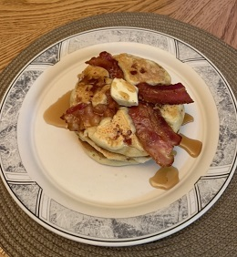

Introduction
Hi, my name is Griffin Ebel and I’m currently a sophmore here. I grew up fairly local to the Lewis area being born and raised in New Lenox, which is only about a thirty-minute drive from the campus; it was also rated as one of the most boring suburbs in Illinois which is part of the reason I decided to stay on campus here at Lewis. My family is about average size at five people, giving me two siblings: an older brother and sister. I also have four pets, one of which is a Dog and the remaining three are all cats. I don’t pick favorites with them though because they are all equally as cool in my eyes. On the flip side, I am planning to declare as a UAS major at the end of this semester, but I am also still trying to figure out a minor I would like to add. Anyways, that’s about all my biographical information, unfortunately not that interesting of a guy.
Contact Me Here
Fun Facts About Me
Favorite color
I drive an exotic vehicle
I work three jobs over the summer
I lied I drive an 06 Saturn Vue
Brownies are my least favorite dessert by a large margin
My Favorite Hobby: Cooking
Cooking has been my favorite hobby for about six years now. Whether it is baking, grilling, or making some fancy meals, I just love being in the kitchen creating new dishes and flavor combinations. Cooking for me is also is extremely relaxing and never fails to calm my nerves. Finally, my favorite thing to do in the kitchen is experiment with new flavors. That’s where creations such as these bacon pancakes (pictured below) come from. Even if they don’t turn out, it’s always fun to mess with what’s considered normal food.
